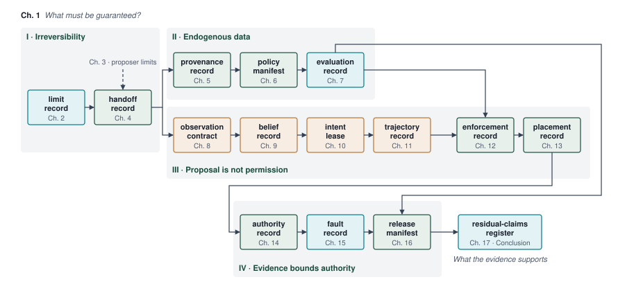

因果边界
因果边界

目的
机器必须提供哪些保证，学习得到的模型提出的提议才能转化为物理功？
学习得到的策略可能选出机器无法安全执行的动作。 一旦指令到达电机，电流便产生转矩，运动的物体携带动量。 取消计算无法逆转这一运动。 当机器人的软件处理观测时，其物理底盘仍在向障碍物滑行。 每毫秒的计算延迟都会消耗物理空间，不可逆地压缩可用的制动包络。 仅预测精度无法决定某个动作是否应当执行；即便策略在基准上达到 99.9% 的精度，一旦在不受约束的物理环境中跨越数千小时运行，仍会引发灾难性碰撞。
物理人工智能通过把机器划分为五个不同的运行层级来化解这一张力。 位于 Brain 中的高容量学习模型提出候选轨迹，但在统计性提议与物理执行之间，存在一条因果边界：数字比特指挥电机电流的确切接口。 Brain 掌握提议权，而确定性的 Nervous System 保留硬实时执行权，负责依据 Body 实测的运动学与热学限值核验指令。 当学习策略遭遇尾部延迟、内存耗尽或语义错误时，Nervous System 会在机器耗尽其净空预算之前，通过一条经核验的停止后缀截停运动。
↳ 下游： 因果边界之后的被控对象限值在 测量机器自身的极限 中测量并记录。
学习目标
- 解释为何跨越因果边界的指令无法被软件召回
- 计算制动前延迟的盲驶距离，并与制动距离进行比较
- 依据净空裕度、接触力、热学裕度或相位裕度中最先耗尽的预算，对物理机器进行分类
- 应用物理 AI 范围测试，以区分建议型模型与自主物理系统
- 定位五级机器中的提案边界，并解释为何只有授权路径可以驱动执行器
- 诊断自主机器事故中时序失效与权限失效如何叠加
- 评估不可逆性、闭环数据与有限证据各自如何使一条独立的授权路径成为必要条件
- 解释物理动作的控制权限为何依赖于状态，从而使物理安全、信息安全（或安保）与问责在授权路径上交汇
《超越玻璃的人工智能》
机器人接近一扇敞开的门，必须做的不只是在摄像头流中识别出这个门洞。 它必须评估自己的物理底盘能否穿过这个开口，选出一条可行的轨迹，并随着动量将其向前推动而持续调整这条路径。 如果突然出现障碍物，取消软件线程或抛出未处理的异常都无法阻止机器的动量。 设计这一行为，需要将一条决策全程追溯，从感知证据一直追到电磁转矩与机械功。 这条完整的闭环，正是物理人工智能系统工程领域的研究对象。
在一台物理机器中，数字比特可以通过功率逆变器控制电流，磁通量产生机械转矩，运动中的质量积累动量。 因此，一条错误的指令可能在软件修正之前，就导致齿轮箱剪切、电池电压轨塌陷，或发生碰撞。
莫雷沃悖论1 (Moravec 1988年) 解释了学习模型为何会进入这条闭环：需要人类意识高度投入的任务，例如下棋或证明定理，所需的计算量并不大，而无需费力即可完成的感知运动技能（例如在凹凸不平的砾石路上行走，或在不捏碎鸡蛋的情况下抓取鸡蛋）则需要巨大的计算与控制资源。 随着高容量神经网络被部署以掌握这些感知运动任务，工程团队遇到了暴露墙，该概念由 物理试验极限 推导而来。 离线基准准确率无法预测开放世界中的闭环稳定性，且任何可行的无失败测试量都无法单独证明不断增长的物理部署所要求的罕见失败率，因此安全论证必须覆盖累积暴露，而不只是受控演示。
当数字模型驱动物理执行器时，它们首先进入诺伯特·维纳在控制论2 (Wiener 1948年) 中首次形式化的闭环因果反馈回路。 信息不再是一条以显示设备为终点的开环信息流。 相反，每一次物理运动都会重新定位机器的传感器，在经典力学的确定性规律下重塑随后的观测。 构建这样一台机器需要依托四种技术文化（机器学习、计算机系统、经典机器人学，以及嵌入式硅片与安全），而跨越这些文化的团队会发现，每种文化都以各自的术语来界定问题。
机器学习视角聚焦于参数数量、transformer 主干网络以及扩散策略在数百万个仿真步骤上的规模化，将真实世界部署视为更大规模演示数据集与数据集覆盖范围上的挑战。计算机系统视角聚焦于内存总线带宽、缓存层次结构以及尾延迟分位数，并认识到以高频率流式传输多 GB 神经权重可能导致内存互连饱和，并使相机直接内存访问流水线资源不足 (Williams 等 2009年)。经典机器人学视角依赖牛顿-欧拉动力学来管理机械力与运动。若神经网络驱动快速的运动变化（高频加加速度），它可能剪切齿轮箱或激发结构共振，从而使经典稳定性裕度至关重要。最后，嵌入式硅片与安全视角聚焦于裸机中断服务程序、硬件跳闸保护区以及功能安全标准（如 ISO 26262 和 UL 4600），确保未经验证的统计模型永远不直接对电机功率级拥有写访问权限。
每种视角都提供了关键洞见。梯度下降无法修复断裂的传动机构，也无法阻止供电电压崩溃；而手工调参的经典控制器则无法提供开放世界语义场景理解。一个可行的物理人工智能系统架构必须统一各方的职责，而不要求任何单一学科承担整个问题。
↳ 下游： 学到的提议与执行权之间的分离，被映射到隔离的硅片域中，见 权限路径的执行位置。
Definition 1.1: 物理人工智能
物理人工智能 是闭环物理机器（physical machines）的工程化，其中高容量学习模型提出动作，而经典力学、热力学与硬实时硅基芯片对其加以约束。
- 意义：建议性 AI 输出缺乏直接的执行器控制权限，尽管人或下游系统可能据此采取行动。 物理人工智能会跨越到具有连续物理动态的被控对象中，在那里数字比特控制电机电流，动量不断累积，而软件执行停顿也可能促成机械断裂、过热或碰撞。
- 区别：与经典机器人学（依赖手工设计的状态机和显式运动学模型）或互联网规模的机器学习（在静态离线数据集上运行）不同，物理 AI 将高容量的统计泛化能力与确定性的硬件安全过滤器耦合在内生闭环因果回路中。
- 常见误区：把物理实体当作基础模型的外围输入输出设备。 缩放定律与基准准确率并不能阻止供电电压崩溃、齿轮箱剪切或执行器力饱和；物理安全需要一种非对称架构，其中独立的实时检查可以否决任何学习得到的提议。
本章追踪一条指令从计算到物理做功的传递过程，比较三类机器的预算，用范围测试判定哪些机器属于该学科，将机器划分为五个层级，并以 Tempe 碰撞检验已学提案与执行许可之间的边界。后几节将上述失效分析归纳为四条定律，追溯物理安全、信息安全／系统安保与问责的交汇之处，并给出本书的架构。
因果边界
仅显示建议的咨询模型没有通往电机或阀门的直接路径。 用户可能驳回该建议，且外部动作提交之前，数据库事务可能被回滚3。这两项性质都不使数字错误无害：人可能听从错误的建议，而自动交易系统可能执行后果严重的订单。 关键区别在于，模型输出能否自动到达物理执行器。
物理人工智能消除了模型输出与执行器之间的鸿沟。 在物理机器中，控制回路的最后一条指令并不写入屏幕，也不生成网页响应。 对于习惯在 PyTorch 中编写 action = policy(observation) 的机器学习系统工程师而言，因果边界就是浮点张量与物理硅片相遇之处。 策略的输出张量通常是预测未来若干航点序列的动作块（关节位置、速度，或 6-DOF 笛卡尔位姿），4无法直接在物理电机上执行。
必须存在一次独立的校验，位于学习得到的提议与执行器指令之间。 若该校验放行该提议，则其设定值会经由一组确定性的驱动回路级联，被转换为电机电流，而该级联中最后一步的软件动作，是写入硬件寄存器中的一个数值。 取决于机器架构，该硬件寄存器充当数字到模拟转换器锁存器，保持一个指令参考电压；或充当脉宽调制（PWM）比较寄存器，设定逆变器占空比；或充当串行控制字，配置栅极驱动器。 在该精确的内存地址处，信息抽象就此终结。 调制功率 MOSFET 的栅极电压，会从高压直流母线向定子绕组抽取电流，产生洛伦兹力，使转子克服折算到转子侧的负载惯量而加速。
Definition 1.2: 因果边界
因果边界 是数字计算比特转换为物理力、电流或流量的物理与电气接口。
- 意义：在执行动作之前，可以在不施加物理功的情况下否决一个提议。 执行动作之后，动作可以改变环境、耗散热量（\(I^2 R\) 电阻发热、滑动摩擦），并重塑后续感官观测。
- 区别：与分阶段的数字提议不同，后者在提交生效之前可以被否决；而施加的力无法撤销，其已经完成的物理功仍保留在装置中。
- 常见误区：假定软件异常或线程取消能够制止物理动量。 一旦 PWM 比较寄存器锁存，电流开始流动、质量开始加速；制止该运动需要专门的制动距离（\(d_{\text{stop}}\)）和摩擦制动。
从数字状态转向物理力，打破了离线机器学习所依赖的核心假设：数据不依赖于模型的输出。 在离线视觉、自然语言处理与表格预测中，数据采集是外生的：世界生成一组输入分布，而模型在不改变生成它们的机制的前提下对其进行处理。 在物理系统中，环境沿闭合的因果回路演化：下一个物理状态与传感器观测直接依赖于先前模型推理所产生的动作。
感知输入流是内生的，由机器自身的既往动作生成。 当策略产生错误的力矩指令时，关节发生转动，平台发生位移，而安装其上的相机或激光雷达单元随之摆动到新的视角。 机器将自己驱入状态空间中训练数据稀疏的陌生区域，从而提高了后续推理出错的概率，并加剧了与标称运行的偏离（图 1）。

由于物理质量具有惯性，而计算需要有限时间，物理人工智能中的延迟直接转化为物理位移。 如图 图 3 所示的自主测试平台，现实世界中的机器人系统依赖密集的多模态传感器套件（旋转式激光雷达扫描仪、相机阵列和雷达单元），持续向车载处理器传输高带宽遥测数据。 该流水线中的每个环节，从光电二极管曝光与传感器总线串行化5，到加速器硅片上的神经推理以及通过确定性现场总线进行的报文传输，都要消耗毫秒级时间。
作为一个具体例子，考虑仓库移动操作臂的轮式底盘（完整介绍见 节 1.3），正以 1.5 m/s 驱动上限沿通道巡航（示意性；参见读者指南）。 其制动前延迟，后文各章将逐项组装，至多 133.6 ms，即从显示有人从货架端走出的相机帧被捕获，到制动力的起始。 在该时间间隔内，底盘行进的距离为 200 mm，对帧所记录的任何内容均无响应。 若有人走出得更近于该距离，则在制动开始之前即被触及，无论模型容量多大都无法改变这一结果。
这一计算延迟与物理净空之间的权衡，由 运动学上限 形式化给出。 在经典计算机系统体系结构中，Roofline Model (Williams 等 2009年) 以两个上限中的较低者界定可达吞吐量：峰值内存带宽乘以算术强度（算术运算数与移动字节数之比，单位为 \(\text{FLOPs/byte}\)）以及峰值算力。 在物理人工智能中，运动学 roofline 将制动前的延迟 \(\tau_{\text{delay}}\) 与平台速度 \(v\) 耦合起来，以约束物理制动净距，相对于可信制动减速度 \(a_{\text{brake}}\)；但它将两项相加，而不是以其中一项限制另一项。
在紧急制动下，总制动距离 \(d_{\text{stop}}\) 是盲行距离与制动距离之和，前者随延迟线性增长，后者随速度的平方增长。机械动量 由此推导出该关系。 盲行距离是不可协商的。 在延迟期间，无法施加任何制动力，因为传感器曝光尚未通过感知与现场总线传播到制动器。 如 表 1 所示，在具身平台中具有代表性的情形下，延迟占停车距离的比例在低速、敏捷平台中最大，而其绝对行程则在快速车辆中最大。
| 物理平台与速度 \(v\) | 制动减速度 \(a_{\text{brake}}\) | 机械制动距离 \(d_{\text{braking}}\) | \(\tau_{\text{delay}} =\) 10 ms（Reflex 类） | \(\tau_{\text{delay}} =\) 50 ms（Short 类） | \(\tau_{\text{delay}} =\) 200 ms（Long 类） | 延迟占比（200 ms） |
|---|---|---|---|---|---|---|
| 人形 / 四足（1 m/s = 3.6 km/h） | 4 m/s² (0.41 g) | 0.125 m | 0.135 m (+1 cm) | 0.175 m (+5 cm) | 0.325 m (+20 cm) | 61.5% 占总停车距离 |
| 仓储移动操作机，基座（1.5 m/s = 5.4 km/h） | 2 m/s² (0.20 g) | 0.563 m | 0.578 m (+1.5 cm) | 0.638 m (+7.5 cm) | 0.863 m (+30 cm) | 34.8% 占总停车距离 |
| 城市配送机器人（6 m/s = 21.6 km/h） | 4.5 m/s² (0.46 g) | 4 m | 4.06 m (+6 cm) | 4.30 m (+30 cm) | 5.20 m (+120 cm) | 23.1% 占总停车距离 |
| 自动驾驶车辆（20 m/s = 72 km/h） | 7 m/s² (0.71 g) | 28.6 m | 28.8 m (+20 cm) | 29.6 m (+100 cm) | 32.6 m (+400 cm) | 12.3% 占总停车距离 |
正如计算机体系结构设计者无法通过增加 ALU 执行单元来解决算术流水线受内存带宽限制的性能瓶颈一样，自动驾驶车辆系统工程师也无法通过增加模型参数来消除紧急制动净距违规，若这样做会延长制动前的延迟 \(\tau_{\text{delay}}\)。 一个更重的基础模型若增加 150 ms 的计算耗时，则在高速公路上会额外消耗 3 m 的物理行驶距离，这段距离没有任何摩擦制动或碰撞规避逻辑可以挽回。
这一权衡的物理现实，在自动驾驶车辆系统（图 2）的五个十年跨度上沿纵向得到刻画。 任何物理人工智能平台的安全运行速度都严格受运动学制动上限约束： \[d_{\text{stop}} = v \tau_{\text{delay}} + \frac{v^2}{2 a_{\text{max}}} \le R_{\text{sensor}}\] 其中 \(v\) 为车辆速度，\(\tau_{\text{delay}}\) 为端到端“感知—决策—执行”回环延迟，\(a_{\text{max}}\) 为紧急制动减速度（在干燥沥青路面上为 \(0.7\,\text{g} \approx 6.86\,\text{m/s}^2\)），\(R_{\text{sensor}}\) 为有效传感器感知范围。
在早期的审议式 时代（1970–1980 年），SRI 的 Shakey 与 Moravec 的 Stanford Cart 因离板主机计算瓶颈，回环延迟介于 \(15\) 与 \(30\,\text{seconds}\) 之间，将安全爬行速度上限限制在 \(0.2\,\text{km/h}\) 以下。 到了 1980 年代中期与 1990 年代，Ernst Dickmanns 的 VaMoRs 表明，以 \(25\,\text{Hz}\)（\(\tau = 40\,\text{ms}\)）运行定制的 4D 动态视觉算法，即可在德国高速公路上达到 \(96\,\text{km/h}\) 的车速，证明了控制回环节奏——而非原始认知推理深度——决定安全移动性。 在 DARPA Grand Challenges（2004–2007 年）期间，Stanford Stanley 与 CMU Boss 以 \(10\text{--}12\,\text{Hz}\) 的控制回路频率运行（回路延迟为 \(85\text{--}100\,\text{ms}\)），以 \(48\text{--}60\,\text{km/h}\) 的速度穿越沙漠赛道与城市路口。 如今，量产自动驾驶出租车（如 Waymo Driver）将回环延迟维持在 \(\sim 80\,\text{ms}\)，以确保制动包络始终远小于其在高速公路车速（\(110\,\text{km/h}\)）下的 \(200\,\text{m}\) 传感器感知范围；而自动驾驶赛车车辆（如 Indy Autonomous Challenge 的 PoliMOVE 车队）则将回环延迟压低至 \(28\,\text{ms}\)（\(>35\,\text{Hz}\)），从而在超过 \(309\,\text{km/h}\) 的速度下安全运行。
/var/folders/7g/fkg91tq50f58kfmg7c65747r0000gn/T/ipykernel_91824/2632325859.py:214: UserWarning: FigureCanvasAgg is non-interactive, and thus cannot be shown
plt.show()一旦数字指令转化为机械功，状态变化便成为热力学上不可逆的。 物理世界不提供回滚机制。6 当执行器控制器向电机施加电流时，电能从电池转移到机械连杆的动能中，或以电阻性焦耳热（\(I^2 R\)）的形式耗散在定子绕组中。 如果错误的关节扭矩将机械臂驱动进刚性钢制夹具，动能便转化为工具的塑性变形、减速器齿轮的机械应变以及热量。 没有任何软件中断能够从被压溃的结构中取出该动能，也无法将被剪断的齿轮齿恢复为原始几何形状。
↳ 下游： 支配电机不可逆性的非光滑接触力学与扭矩饱和极限在 执行器传动限制 中推导得出。

物理人工智能继承了咨询式机器学习的学习模型与经典控制中的执行器，因而兼具任一领域单独都不会面对的失效模式组合（表 2）。
| 架构维度 | 数字机器学习（咨询式） | 经典机器人学与控制 | 物理人工智能（闭环） |
|---|---|---|---|
| 运行基座 | 解耦的虚拟内存缓冲区（GPU VRAM、DRAM、网页端点） | 由微分方程支配的连续模拟状态空间 | 混合：高维神经表示映射到模拟物理执行器 |
| 模型形式化 | 高容量统计逼近器（LLMs、ViTs、扩散策略） | 解析给定的传递函数与确定性状态空间矩阵 | 基础策略与确定性运行时安全过滤器配对 |
| 反馈动力学 | 外生且静态；独立同分布样本 | 连续确定性状态反馈，叠加高斯传感器噪声 | 内生、非平稳闭环；动作塑造未来观测 |
| 执行节奏 | 按吞吐量优化的批处理；软性或无界延迟预算 | 微控制器上的硬实时单速率循环（100 Hz 至 1 kHz） | 多速率：意图模型（1–5 Hz）与分块策略（10–50 Hz）提出；权限循环 1 kHz 在一种实现中允许 |
| 执行权限 | 咨询式；沙箱 API、显示缓冲区，或人机在环验证 | 硬编码反馈直接驱动功率逆变器定时器与 PWM 寄存器 | 由独立路径校验的学习型提案，在到达执行器之前 |
| 失效语义 | 在外部动作发生之前，输出可被拒绝，交易可被回滚；下游损害仍然可能发生 | 执行器饱和、跟踪误差或稳定性丧失 | 不可逆的热力学功、塑性变形、动能碰撞或定子过热 |
| 安全保证 | 离线验证集上的统计损失最小化 | 形式化数学稳定性证明（Lyapunov 函数、增益/相位裕度） | 分层运行时不变量强制、前向不变量屏障滤波器与故障注入 |
右列的失效语义与执行权限两行源自不可逆性。 一条获准执行的指令所做的物理功，后续任何软件动作都无法撤回，因此对其的检查必须先完成。 该物理功首先损害什么、损害有多快，取决于机器移动的是什么；这种依赖关系决定了检查必须达到的时限。
三类机器
一台自主配送无人机在湍流阵风中的导航，似乎与一条六轴机械臂装配汽车变速箱毫无共同之处，二者也都看不出与一套集装箱式部署的电池管理装置调节液态冷却剂有任何关联。 只有当它依据比外形更深层的东西对它们进行分类时，一门课程才能涵盖全部，而不至于沦为一系列临时拼凑的配方。
关键在于，要透过表面的形态，看到其底层的物理守恒定律。 每一个具身人工智能系统都受三类基础物理类别中的一类或多类支配，每一类都由支配其执行器的守恒定律来定义（图 4，图 5）：在空间中移动质量、通过物理接触施加力，或调节连续的流体与热流。 人形机器人将三者集成于同一底盘。 如此对机器进行分类，使系统架构师能够确定在软件停滞或异常期间哪一项资源预算最先耗尽，并据此确定机器安全响应所需的能力。表 3 将这些预算与各自最终导致的失效以及必须拦截该失效的关卡并列呈现。

| 类别 | 示例 | 首次预算耗尽 | 失效模式 | 安全闸门 |
|---|---|---|---|---|
| 以质量为主导 | 自主移动机器人、自动驾驶车辆、无人机、移动底盘 | 制动距离与制动前延迟（\(\tau_{\text{delay}}\)） | 动能碰撞；动量突破 | 以停止预算设定的速率进行的独立制动检查（一种实现中为 \(1\text{ kHz}\)） |
| 以接触为主导 | 机械臂、夹爪、压力机 | 执行器电流与齿轮箱应力 | 齿轮齿剪切；工件损伤 | 扭矩导数钳制与 \(C^2\) 平滑的轨迹限制（加速度连续） |
| 以流量为主导 | 热回路、逆变器、生物反应器 | 热裕度或相角裕度 | 热失控；绝缘击穿 | 硬件热观测器与联锁 |

本书跟随一台机器，从第一章一直写到最后一章。 仓库移动操作臂是一台以轮式底盘为基座、搭载七关节机械臂、导航相机与激光雷达、腕部相机以及两台计算机的移动操作臂。 应用处理器运行其学习得到的模型，而一块独立的安全微控制器则按照固定的短周期，判定某个拟议运动是否允许到达电机。 其分块策略是一个全身动作分块模型，该模型联合提出底盘速度与机械臂关节目标，正如本类移动操作臂系统所做的那样 (Fu 等 2024年)。 底盘是一台质量主导的 第 1 类 机器，必须在到达从货架末端走出的人员所在位置之前停下。 机械臂是一台接触主导的 第 2 类 机器，必须打开弹簧锁扣的笼门、从移动的输送带上提起一只陌生马克杯，并在打包工位将马克杯递给同事，且每一次操作都不得超过接触力限值。 拥有机器停车预算中某一项的章节依次加入该项，因此某一章节计算出的数值即为下一章节所使用的数值。 其余各章讨论的是消耗该预算的提议者，以及决定提议者可花费其中多少的证据。 第 3 类 过程装置在每个部分各出现一次，作为对照。
第 1 类：移动系统
第 1 类 机器在空间中移动质量，受动量守恒与动能耗散约束（图 4 a，图 5 a）。 在自主运输平台、于崎岖地形上导航的四足机器人（如波士顿动力 Spot）、移动操作臂和空中无人机中，执行器桥施加力以平移或旋转具有质量 \(m\) 的物体，使其以速度 \(v\) 运动。 由于动能 \(E_k = \frac{1}{2}m v^2\) 一旦传递到底盘便无法瞬时消除（必须通过摩擦、空气阻力或再生制动将其耗散），安全性主要体现为剩余的空间余量。 表 1 的制动距离是该类别的预算，软件停滞或模型误分类期间首先被突破的边界，是到外部障碍物的物理距离。
要观察该预算的两项如何随规模变化，回到以 1.5 m/s 驱动极限巡航的仓库底盘，它正驶向一个货架端部，一名人员已从那里走出。 装载着其货箱架后，其质量至多为 368 kg，并携带 414 J 的动能，制动必须通过车轮与地面的摩擦将这些能量释放掉。 在可信的减速度 2 m/s² 下，仅制动就需要 562.5 mm 的地面。 对 133.6 ms 预制动延迟的盲目行驶 200 mm 发生在上述任何制动之前，并额外增加了 35.6 percent 的制动距离。表 1 通过另一种度量方式，即其 200 ms 长延迟类别的行驶距离占整个停车过程的比例，得出了针对同一底盘的相近数值 34.8%。 这两项分别对应不同的设计取舍。 更大的模型会延长延迟，盲驶距离随之按比例延长；而将巡航速度翻倍，则会使动能与制动距离都变为原来的四倍。
第 2 类：操作（操纵）系统
第 2 类机器通过接触施加机械力，其能力受执行器扭矩饱和、环境刚度以及电流环带宽限制，即电机控制器感知并调节电流以控制扭矩的速度（图 4 b，图 5 b）。 在具有关节的操作臂、精密装配夹具，以及执行富接触插入与抓取作业的机器人学习工作站中，末端执行器与刚性或柔顺工件直接相互作用。 与移动平台不同，接触表面的手臂无法通过向前滚动来化解未预期的位移。 当执行器向刚性边界指令位置时，物理位移被阻断，相互作用如同由机械阻抗所支配的压缩弹簧。 根据胡克定律，由空间穿透误差 \(\Delta x\) 对刚度为 \(k\) 的环境所产生的接触力为 \(F = k \Delta x\)。7
接触刚度可能使保持中的运动指令在高层规划器返回之前变得昂贵。 考虑同一台仓库移动机械臂的机械臂，该机械臂正使其夹爪以 0.10 m/s 的速度朝笼门上的锁扣板运动；假设其低层控制器持续执行该指令，而高层过程则停滞了 75 ms。 该板相当于刚度为 4.0 × 10⁵ N/m 的弹簧，锁扣最多承受 100 N 的接触力，并假设机械臂具有足够的扭矩以在接触后继续运动。 随后，该板发生 \(\Delta x = v \cdot \Delta t =\) 7.5 mm 的挠曲，弹簧模型给出 \(F = k \cdot \Delta x =\) 3,000 N、30 倍的力限值。 电机饱和、其他处的柔顺性，或控制器在陈旧指令上停止，都会改变这一结果。 面对如此刚硬的板，可用于检测接触并将指令运动限制在限值之内的时间以毫秒计，远短于停滞时间，策略训练 由此为该板导出这一预算。
第 3 类：过程与能源系统
除运动中的连杆与接触之外，Class 3 机器还调节连续的流体、热或电功率流（图 4 c，图 5 c）。 冷却回路必须像过程产生热量的速度一样快地移除热量。 在净加热功率为 \(P\)、热容为 \(C_{\text{th}}\) 的情况下，泵停转会带来温度上升 \(\Delta T = \int P/C_{\text{th}}\,dt\)，直到流量恢复；传输延迟还会使新冷却剂到达发热部件之前增加一段时间。 对于示算常数 \(P\) 为 1 kW、\(C_{\text{th}}\) 为 10 kJ/K，该元件以 0.1 K/s 升温，因此 5 K 的裕量在假定限值之前提供约 50 s。 并网逆变器面对的是不同的预算：在 60 Hz 网络上，未补偿的 1 ms 相位估计延迟对应 21.6° 的相位误差。 该误差是否导致不可接受的电流，取决于逆变器的阻抗与保护设计；8.33 ms 的半周期本身并非通用的失效时限。 在每个装置中，允许的软件延迟由物理裕量与可用保护共同决定，而非仅由时钟周期决定。
人形机器人将这三者耦合在一起
人形机器人不属于单一机器类别。 三种物理机制在其单一、严格受限的移动底盘上同时运行并相互竞争：
- 移动运动中的 Class 1 动力学： 欠驱动双足平衡、动态足端放置、动量守恒（\(m\mathbf{v}\)），以及行走与爬楼梯过程中的地面接触滑移，均需要持续的空间净空与动能管理。
- Class 2 动力学在操作与接触中： 双臂末端执行器、多指抓取，以及与环境工件之间的刚性接触过渡，使运动学链在物理交互过程中承受高冲击载荷（\(F = k \Delta x\)）、关节扭矩饱和与传动屈服应力。
- Class 3 动力学在驱动与功率输送中： 由单块车载直流电池组同时驱动 20 至 50 个高扭矩执行器，将逆变器热耗散（\(I_{\text{phase}}^2 R_{\text{phase}}\)）推至其极限。
Systems Perspective 1.1: 人形体的熔炉
- 接触转化为动量（第 1、2 类）： 接触力扰动质心，机器人必须在倾倒之前放置一个恢复步，从而把一个接触问题转化为制动问题。
- 动量转化为热量（第 1、3 类）： 恢复步使髋部和膝部驱动器通过峰值电流，绕组温度迫使驱动器在平衡最需要的时刻降额扭矩。
- 电流转化为电压跌落（第 3 类）： 同一电流瞬态使共用的电池母线电压跌落，并可能在步的中途重置运行学习模型的计算机，除非其电源域与驱动器解耦。
本书的每一部分都以在人形机器人身上检验其定律作结。
当单类机器（例如轮式 AMR 或固定式工业机械臂）将自身的物理预算隔离到单一主导守恒律时，人形机器人则迫使系统架构师处理跨类别的耦合争用，其中没有任何一项预算可以脱离另外两项而独立定标（电气功率完整性 量化了母线跌落）。
对于任何物理人工智能系统，设计独立检查的第一步，是确定在故障发生时最先耗尽的是哪一项物理预算。 在软件系统中，资源约束集中在处理器周期、内存分配和网络带宽。 在物理系统中，系统架构师必须判断是空间净空、结构应力还是散热，决定了关键时序截止。 在高速度车辆或四足机器人中，空间净空在不到一秒的几分之一时间内失效，而电机绕组温度仍安全地低于热极限。 在装配压机中，机械应力在数十毫秒内超过结构件的屈服点，此时底盘尚未发生可感知的位移或升温。 在化学反应器或电池组中，机械应力可以忽略，但累积的热能会在数秒内突破安全运行包络。 这三个领域中失效所需的最短时间，定义了独立检查必须满足的确定性执行截止时间。
属于这三类物理类别之一，本身并不意味着该机器需要完整的物理人工智能系统学科。 一台经典液压机或一个确定性 PID 无人机自动驾驶仪操纵质量与接触力，但完全在经典控制理论范围内运行。
物理人工智能范围测试
缺少范围边界时，团队会在两个方向上出错：把神经网络模型用在闭式 PID 控制已经足够的情形，或者让安全关键回路中的随机模型获得未经验证的电机控制权限。
物理人工智能的范围由三项结构标准的同时交集定义（图 6）：
- 学到的统计模型（不可形式化策略）： 系统依赖从数据中获取的策略、感知编码器或世界模型（例如神经网络、基础模型、扩散策略(Chi 等 2024年)），其输入–输出传递函数无法写成闭式解析方程，且其最坏情况输出无法在离线时通过数学方法给出界。
- 后果性物理反馈： 执行器动作会改变物理环境的物质状态，进而依据经典力学、热力学或电磁学的支配定律，直接决定传感器接下来观察到什么。
- 委托的物理权限（系统级驱动）： 一个学习得到的组件提供实时提案，自动化系统无需同步的人类批准即可执行。 学习得到的模型不必亲自写入执行器寄存器；系统之所以掌握物理权限，是因为一个被接受的提案可以到达执行器。

闭环反馈回路是物理交互的必要条件，但仅凭反馈并不足以使机器进入该领域。 经典比例-积分-微分（PID）控制器在航空航天与工业自动化领域以 \(1\text{ kHz}\) 运行，通过紧密的传感反馈调节阀门位置与电机扭矩。 它们的反馈回路是连续的、物理的，但其控制律完全由固定数学公式给出，其稳定性边界可从传递函数解析地证明。 它们拥有物理权威并经历物理反馈，却缺少一个学习得到的模型。 相反，高频算法交易引擎在微秒级时间内，依据学习得到的预测模型执行自动市场订单。 它们将学习得到的策略与委托的交易执行权结合起来，但它们所接收的反馈完全是数字化的、信息性的。 当一笔订单执行时，它改变的是电子订单簿，而非动量、摩擦或热能。 算法交易中的未处理停滞会消耗金融资本，但它不会引发由惯性导致的与结构件的碰撞。
仅靠学习得到的模型无法定义该领域。 离线神经轨迹优化器可以计算机械臂的路径，但如果工程师必须在执行前逐一检查并显式加载每条路径，那么它的输出就不具备被委托的运行时权限。 同样，一个仅记录装配线缺陷或在显示界面上给出提示的神经网络属于建议性系统，因为其输出无法自动驱动产线。
剩下的配对——一个具有物理反馈但无权限的学习模型——完成了这一边界。 实时驾驶员疲劳监测系统使用学习得到的计算机视觉模型来跟踪眼睑运动和车辆车道位置，并接收来自车辆状态的持续物理反馈。 然而，它缺乏被授权的物理权威，因为其唯一输出只是一声听觉警示鸣响。 若视觉模型在推理超时或流水线停顿期间完全失效，扬声器只会发出无声，而物理转向拉杆与刹车卡钳仍安全地处于人类控制之下。
最具挑战性的边缘场景出现在共享自主性中，其中物理控制权在人类操作者与学习模型之间动态分配。 在机器人手术或高级驾驶辅助中，人类操作者持续提供转向或工具引导，而学习策略注入修正量，以滤除手部震颤、避开解剖边界或补偿车辆打滑。 这些架构同时满足学习组件与物理反馈两项标准。 它们是否属于物理人工智能的范畴，完全取决于授予模型的时间域控制权。 若学习策略能够在人类反射时间窗 \(150\text{--}250\text{ ms}\) 内无需人类确认即可施加哪怕仅 \(2.0\text{ N}\) 的力或调整转向角，则该模型拥有被授权的物理控制权。 在该时间窗内，错误的模型输出或延迟的推理包会在人类操作者的神经肌肉系统实际做出反应进行干预之前，对世界施加真实的物理作用力，甚至可能造成转向失控或组织损伤。
评估一个存在歧义的机器，需要分别独立检验每一条标准，正如 表 4 对代表性系统所做的那样。 确定性的否决并不能取消被委托的权限；对离线计划强制进行人工复核则可以做到。 当三项测试全部通过时，该系统即作为物理人工智能运行，其工程必须遵守 节 1.2 所确立的因果边界。
| 系统候选 / 案例 | 标准 1：学习得到的模型（不可形式化指定的策略） | 标准 2：后果性物理反馈 | 准则 3：委托的物理权威（自动门控执行） | 范围分类与学科 | 受限物理与关键失效模式 |
|---|---|---|---|---|---|
| 自主仓库 AMR（第 1 类） | 是（学习得到的导航策略 / 代价地图） | 是（动量、底盘惯性，以及车轮牵引力） | 是（提案经接受后无需人工批准即可进入电机控制） | 物理人工智能 | 动能冲击；牵引打滑与里程计丢失 |
| 关节式接触机械臂（第 2 类） | 是（面向装配的 Transformer 动作切分(Zhao 等 2023年)） | 是（机械接触阻抗与反作用力） | 是（安全门控提案驱动实时关节指令） | 物理人工智能 | 结构屈服强度超限；齿轮箱齿剪切 |
| 高速无人机经典自动驾驶仪 | 否（解析调参的 \(1\text{ kHz}\) PID／级联回路） | 是（气动升力、阻力与陀螺动力学） | 是（直接 PWM 电机转速控制） | 经典控制理论 | 控制裕度侵蚀；转子推力饱和 |
| 高频做市商 | 是（深度 Transformer 序列预测器） | 否（数字订单簿状态；内存与网络队列） | 无（无物理执行；指令自动执行） | 数字机器学习／金融科技 | 财务资本损失；市场扰动 |
| 驾驶疲劳监测顾问 | 是（面部关键点视觉网络） | 是（车辆运动学与驾驶员生理） | 否（仅听觉警示蜂鸣器与仪表盘 LED） | 咨询性决策支持 | 人类感知—反应延迟；零物理控制权限 |
| 离线轨迹优化器 | 是（用于时间最优路径搜索的深层神经网络） | 否（静态 CAD 作业单元模型；离线批量执行） | 否（运动计划经人工工程师验证并加载） | 离线优化工具 | 数值不收敛；运行时与被控对象无直接耦合 |
| 共享自主性手术辅助 | 是（学习到的触觉震颤滤波 / 虚拟夹具） | 是（解剖组织顺应性与反作用力） | 有条件成立（模型在人类反射时间窗内注入力） | 临界情形 / 共享物理人工智能 | 人类神经肌肉反射延迟与工具力上升速率 |
Checkpoint 1.1: 约束预算与范围测试
在考察五级机器之前，先验证你能否依据实际构成制约的预算和范围测试来定位一台陌生机器：
《五层机器》
通过范围测试的机器，需要一套组织机制，使它的已学习模型既不能直接写入可能损坏的致动器，仍能引导它。
本书中的机器分为五个层次，从学到的模型到它所作用到的物理，按顺序排列，并由一条权限线分隔。 控制速率自 Brain 向 Body 递增；Body 之下，Boundary 由事件计时，而 World 连续运行。 Brain 持有学到的提议者。 意图模型以 1 to 5 Hz 的速率修订目标，动作分块策略以 10 to 50 Hz 的速率发出短序列的未来设定值；感知与记忆在同一侧以传感器速率运行。
Brain 只能提议。 其下是提议边界，其下则是神经系统，它持有许可路径。 授权路径将每一项提议与新鲜状态及延迟所留下的余量逐一比对，予以采纳、修改或拒绝，并拥有不等待提议者的兜底方案。 在专用微控制器上运行的 1 kHz 循环是一种实现方式；机器实际所需的速率由其制停预算决定。 Body 是机器在其驱动器作用下的自身物理，涵盖从以 10 to 25 kHz 的速率把被采纳的设定值转为转矩的电流环，到其传动、绕组和电源轨——而 物理身体 所测量的正是这些部件的限值。 Boundary 就是因果边界本身，即双向对置的换能器。 在一侧，寄存器写入变为绕组中的电流；在另一侧，光或力变为带有采集时间的测量值。 World 是机器不拥有的全部事物，包括地面、载荷、接触以及人，无论是否有任何层在观察，它都持续演化。
治理不是第六层。 它是环绕全部五层的生命周期外壳，决定谁可以指挥机器、什么证据授权其运行，以及该授权何时失效；它随干预与发布的时间尺度变化，而非随控制周期变化。
↳ 下游： 命令权限的转移，以及对提案流的抢占，由 权威权移交 中的监督器状态机治理。
Definition 1.3: 提案边界
提议边界 是学习模型与权限路径之间的分界线：学习模型只能提出一个动作，而权限路径是一种独立的机制，具有有界的延迟，模型既无法延迟也无法篡改它，也只有它才能允许该动作到达执行器。 权限路径会针对每条提案逐一检查新鲜证据、停止包络，以及从当前状态出发实际可行的兜底方案，只要任一项检查失败就予以拒绝。
- 意义：将模型输出与直接驱动执行器隔离；该保护仅在许可路径的感知、物理限制与回退仍然有效时成立。
- 区别：输出力矩值的策略仍不具备写入执行器的权限；其输出只是提议，须经许可路径接纳后才成为指令。
- 常见误区：把许可路径当作对模型输出的后处理钳制，而非一种能够在提议者迟到、出错或沉默时拒绝执行的独立机制。
每章开头的页边层级栈均绘出相同的五个层级（图 7），并高亮本章所讨论的那一层；表 5 给出各层级的速率，并列出每一层级对应的章节。
| 层级 | 它是什么 | 固定速率 | 本书在何处处理它 |
|---|---|---|---|
| 大脑 | 学习到的提议者及其所消耗的证据 | 意图模型 1–5 Hz；分块策略 10–50 Hz；传感器速率下的感知 | 认知脑、策略训练、传感器感知 至 轨迹规划 |
| 提案边界 | 上层仅可提议；下层可下达指令 | — | — |
| 神经系统 | 授权路径：时序、租约、准入、回退及其硬件实现 | 1 kHz 作为一种实现；所需速率由停止预算决定 | 神经系统, 安全执行, 硅片布局 |
| 主体 | 驱动下的被控对象 | 电流回路10–25 kHz | 物理身体 |
| 边界 | 执行器寄存器写入与传感器采集 | 事件驱动 | 本章；采集时刻见 传感器感知 |
| 世界 | 接触、摩擦、载荷、人员与作业域 | 连续 | 物理数据, 闭环评估 |
| 治理边界 | 谁有权下达指令、什么授权运行、以及该授权何时到期 | 生命周期；无控制速率 | 监督性干预 到 认识论前沿 |

这一组织方式将 Rodney Brooks 的情境性与包容式架构原则 (Brooks 1986年; Brooks 1991年) 付诸实践：快速的反应层直接以感觉反馈保护机体，而高层的审慎决策目标则跨越已验证的契约边界调节行为。 为诊断一次失败，sense–plan–act 分解可定位最早被破坏的合同；S·P·A Diagnostic Playbook 将其发展为操作手册。
这五个层级在运行频率与延迟上跨越五个数量级（表 6）。 在最顶层，审议式基础模型以人类反应尺度进行规划（1–5 Hz）；在最底层，电力电子逆变器以数十至数百千赫的速率切换定子电流（50–200 kHz）。 弥合这些极端情况的是物理现实：延迟即距离——机器以 \(1\text{ m/s}\) 的速度移动时，每毫秒未经检查的延迟都会产生 \(1\text{ mm}\)无法挽回的盲行。
| 机器层 | 频段 | 周期 | 1 m/s 下的盲行 | 架构角色与主导约束 |
|---|---|---|---|---|
| 脑（推理） | 1–5 Hz | 200–1,000 ms | 200–1,000 mm | 多模态 VLA 推理；计算与内存受限 |
| 脑（动作分块） | 10–50 Hz | 20–100 ms | 20–100 mm | 反应式轨迹生成；带宽摊还 |
| 神经系统（许可） | 1 kHz | 1 ms | 1 mm | 屏障证书与停止包络；截止期硬约束 |
| 身体（电流回路） | 10–25 kHz | 40–100 µs | 40–100 µm | FOC 定子电流与转矩控制；电感性时间常数 \(L/R\) |
| 机体（逆变器开关） | 50–200 kHz | 5–20 µs | 5–20 µm | MOSFET 栅极驱动与死区时间；\(L dI/dt\) 下垂 |
↳ 下游： 大脑的既定轨迹构建于 连续轨迹。
当边界失效时
一次物理碰撞可能同时涉及预测不准确，以及在已有证据足以触发干预时未能作出响应。 Tempe 调查展示了物体跟踪、制动策略、对操作员的依赖以及冗余丢失之间的相互作用。
2018 年 Tempe 自动驾驶碰撞事故
2018 年 3 月的一个夜晚，一辆改装沃尔沃 XC90 行驶着 Uber Advanced Technologies Group 的开发性自动驾驶系统（ADS），在亚利桑那州 Tempe 的一条道路上撞上了一名推着自行车横穿马路的行人，并致其死亡 (National Transportation Safety Board 2019年).8
该车辆配备了激光雷达、雷达和摄像头（图 9）。 自动驾驶系统（ADS）在碰撞发生前\(5.6\text{ s}\)首次检测到行人，但仅凭检测并不能给出正确的路径预测 (National Transportation Safety Board 2019年)。
分类变更与丢失的跟踪历史
尽管 ADS 继续跟踪所检测到的物体，它并未对该物体做出制动响应。 NTSB 记录显示，在\(T-1.2\text{ s}\)之前，车辆、自行车和其他类别之间存在分类变更 (National Transportation Safety Board 2019年)。
分类变更后，ADS 路径预测器并未采用该物体的先前位置；对于“其他”类物体，它可以假定一条静止路径。9 由此得到的路径预测直到 \(T-1.2\text{ s}\) (National Transportation Safety Board 2019年) 才将行人置于 SUV 车道内。
↳ 下游： Tempe 这类分类变更所付出的代价，由 停止包络 中的制动包络界定。
动作抑制与丧失的制动余量
在 \(T-1.2\text{ s}\)，车辆以 \(43.2\text{ mph}\) 行驶，ADS 识别出紧急状况并进入其一秒动作抑制期。 设计在检查危险或等待操作员介入时扣留了制动。 在 \(T-0.2\text{ s}\)，抑制结束。 ADS 随后启动了一个渐进减速的计划，并发出警报；它没有请求紧急制动。 NTSB 指出，通信延迟使得无法确定该减速是在操作员于 \(T-0.02\text{ s}\) 解除 ADS 之前还是之后开始的(National Transportation Safety Board 2019年)。
Napkin Math 1.1: 运动学制动预算
- 问题： 鉴于所报告的 1 秒抑制期及其结束时的车辆速度，理想化的从 \(T-0.2\text{ s}\) 开始的完全制动，能否在撞击点之前让车辆停下？
- 假设： 将识别危险时的速度近似为 \(v_0 =\) 19.2 m/s，\(T-0.2\text{ s}\) 处的速度为 18.1 m/s（报告值为 \(40.5\text{ mph}\)），理想化的恒定制动减速度为 \(a_{\text{brake}} =\) 8 m/s²。 位移按恒定速度计算。
- 抑制时段： 在报告的 1 s 内，保持 \(v_0\) 恒定将得到 \(d_{\text{blind}} = v_0 t_{\text{suppress}} =\) 19.2 m。 车辆实际上是在为转弯减速，因此这并非实测的抑制位移。
- 制动比较： 从 \(T-0.2\text{ s}\) 的圆整速度出发，理想化制动需要 \(d_{\text{brake}} = v^2/(2a_{\text{brake}}) \approx\) 20.5 m。 将该速度保持至剩余 \(0.2\text{ s}\)，仅产生约 3.6 m 的行驶距离直至撞击。 即使在该较晚时刻立即完全制动，也无法在撞击点之前停下。 事实上，ADS 计划的是渐进减速，而非完全制动(National Transportation Safety Board 2019年)。
图 8 将记录的事件时刻与上述制动比较绘制在同一时间轴上，从而将这一秒的抑制区间直接置于车辆在抑制结束时所需制动距离的对应位置。


War Story 1.1: 被禁用的安全冗余（2018 年）
机制：如上所述，分类变更丢弃了对该物体的跟踪历史，而一秒的抑制延迟使制动一直推迟，直到只计划缓慢减速。 该设计未采用仅以减轻不可避免的碰撞为目的的最大制动 (National Transportation Safety Board 2019年)。
影响：车辆撞上了行人，并致其死亡。 过晚的缓慢减速计划无法挽回已丧失的制动机会。
响应：NTSB 发现，Uber ATG 出于可能的雷达干扰考虑而关闭沃尔沃的预警和制动系统，这一做法移除了一层安全冗余，并建议加强对自动驾驶车辆测试的安全风险管理 (National Transportation Safety Board 2019年)。
系统教训：分类不确定性、延迟的响应规则以及对注意力不集中的操作员的依赖可能相互叠加。 一项设计需要及时的危险评估，以及当无法避免时能够减轻影响的响应；调查并未规定特定的处理器或邮箱架构。
调查支持一项更广泛的架构要求。 一项发展中的 ADS 即使在感知或路径预测失效时，也需要安全冗余和及时的缓解路径；NTSB 引用的沃尔沃模拟测试表明，工厂紧急制动或许本可以预防或减轻这次碰撞。 报告并未确立一条独立的授权路径会在何时触发，也未确立它会在何处使车辆停止。10
Tempe 展示了撞击之前的失败，此时分类发生变化，而软件抑制延迟阻碍了及时制动。 2023 年 Cruise 机器人出租车事件 (Quinn Emanuel Urquhart and Sullivan, LLP 2024年) 代表了撞击之后的另一个极端，即碰撞后的兜底动作，车辆在行人仍被困于车下时移动了车辆（回退阶梯）。
这两起故障都不能简单归结为模型不准确。 第一次是在制动启动前耗尽了停车距离，此后任何后续动作都无法挽回。 第二起事故选择了撞击后的运动。 合在一起，它们说明了机器行动之前必须成立的条件，以及一旦伤害已经开始，兜底措施可以做什么；随后四条法则针对每一台机器提出了这些要求。
Checkpoint 1.2: 边界与授权失效的取证分析
在研究四条基石法则之前，先验证你对 Tempe 事故中被诊断出的失效机制的理解：
四条基石定律
坦佩的“丢失的秒”正是第一条定律在起作用。 该定律连同另外三条，适用于所有其学习到的提议能够触及执行器的机器，并且每一条都统领本书的一个部分。 它们共同将因果边界转化为要求。
第一条定律：不可逆性。 物理功不可回收，因此每一次检查都必须在执行之前完成，且处于延迟尚未消耗的那段余量之内。 执行器将电能转化为运动、应变或热量，而此后没有任何软件动作将其消除。 制动只能通过施加力随时间和距离作用来对抗动量；一旦设定值反向，变形的夹具仍保持变形。 由于机器在计算时仍在运动，延迟以距离支付：捕获与响应之间的每一毫秒，都是停止已无法利用的行程。 第一部分将这条定律转化为预算。
第二条定律：内生数据。 物理智能体的动作会决定其下一个观测，因此能力仅在闭环测试已覆盖的状态上成立。 在离线基准中，预测不会改变下一个示例。 在一台机器上，一条错误的指令会驱动关节与相机，并将策略送入其演示从未覆盖过的状态。 在每步成本有界的前提下，行为克隆策略的最坏情况超额成本随 \(T^2\epsilon\) 在 \(T\) 步的时间范围内随 \(\epsilon\) 的每步分歧增长 (Ross 等 2011年)；内生经验 给出了该界。 该界并不预测某个特定的失败率，但它说明了为什么单步精度无法为闭环提供认证。 第二部分探讨学习到的提议者的能力究竟建立在什么之上。

行为克隆界随时间跨度的平方增长，对照线性参考。
第三条法则：提议不等于许可。 学习得到的模型可以提议；只有模型无法拖延或篡改的独立路径才可以许可。 许可路径依据已知年龄的状态决定每一个动作，其时限由装置设定，并且它拥有一条不依赖提议者即可执行的兜底路径。 分离的硅片是构建它的一种途径。 同一芯片内的硬件隔离是另一种途径，前提是响应界与故障遏制得到证明。 新鲜度是测试的一部分，因为基于陈旧观测计算出的提议描述了一台已经移动过的机器。 第三部分围绕这条法则构建运行时。
第四条法则：证据界定权限的边界。 行动权限依据已记录证据授予；该权限随证据一同失效，而证据无法裁定的前提必须限制运行。 在有限次试验上的平均表现无法为机械性失败所构成的尾部提供认证，而一次演示并非安全性的证据。 放行案例则对已声明的运行域界定感知、模型误差、执行器响应、制动余量与硬件故障，并指明其未予关闭的部分。 第四部分决定谁有权指挥机器，以及机器可以进入哪些条件。
第三条法则是其余三条所服务的法则。 不可逆性使授权成为必要，内生数据使提议者的能力范围部分受限，而证据界定了授权路径可能授予的权限程度。 扩展提议者并不放宽第三条定律。 理查德·萨顿的“苦涩一课”(Sutton 2019年)认为，利用不断增长的计算量的通用方法最终会超越人工设计的启发式方法。 在一台机器上，这一课所遇的正是本书所称的物理墙。 机载计算受电池能量、散热、内存带宽和供电轨完整性约束，因此增加的模型规模必须以延迟来支付。 一旦该延迟超过停止预算，机器会在前向传播结束前抵达障碍。供给、新鲜度与内存墙 衡量这堵墙留给机器提议者的内容。 以硬件保护环的术语而言，学习得到的模型从非特权域提出，许可路径由可信域拒绝，区别在于拒绝还必须为机器留下物理回退，因为一次缺页异常无法让运动的物体停下。
安全收敛
运行安全考察机器是否造成了伤害。 信息安全考虑是否有外部智能体迫使机器造成了伤害。 问责评估审计者能否确定发生了什么以及为什么。 在软件服务中，这些关切分属不同的工程组织与不同的运行时，由应用逻辑、网络防火墙和审计日志数据库分隔。 在一台移动质量并驱动电流的机器中，三者都收敛于因果边界，此时问题变成：许可路径是否具备状态与授权，能在指令成为作用于装置的扭矩之前拒绝寄存器写入。
安全失效无需对抗者即可发生。 相机镜头在 \(500\text{ h}\) 的运行过程中会积聚灰尘，使输入分布偏离训练域，直至某个注意力头产生分布外转向力矩。 关节轴承会产生机械间隙，引入未建模的齿隙与关节柔顺性，从而将稳定的学习位置轨迹转化为破坏性的极限环振荡。 表面摩擦度的突然变化也可能使轮胎抓地力降至学习策略所假设的摩擦系数以下。 在每个案例中，提议者都会生成一个对网络而言统计上可信、但对机体而言物理上危险的行动。 若授权路径缺少用于检测超限的独立运动学模型或热预算，则未获拒绝的指令将写入电机驱动器寄存器，将储存的动能释放到工作空间中。
信息安全失效会引入一个蓄意利用统计推断与物理现实之间差距的对抗者。 如果攻击者能够操纵感官输入，就不必破解密码学密钥，也不必获得主机操作系统的最高权限。 投影式结构光可以欺骗深度传感器；声学注入可以使 MEMS 陀螺仪内部的微机械加工电容式检测质量块在其自身固有频率处发生共振，诱骗传感器报告并不存在的角速度11；工厂地面上的图案化贴纸（对抗性视觉扰动）则可能诱导视觉—语言—动作模型（一种将摄像头图像与语言指令映射为执行器指令的学习策略）输出最大执行器速度。 在传统服务器上，注入攻击会在一个抽象的内存空间中破坏数据的机密性或完整性。 在物理 AI 中，注入攻击 指挥物理做功，将一次未经验证的推理转化为机械力。 安全边界不能终止于网络接口或操作系统系统调用边界。 该安全边界终止于许可路径，该路径必须依据物理不变量对每个候选命令进行评估，无论提议者是否出于善意，也无论其是否处于对抗性控制之下。
传统软件授权模型在物理机器上失效，因为能力令牌与访问控制列表都预设了离散的、无记忆的交易。 在 Web 服务中，持有有效凭据即授予将记录写入数据库的权限，而该操作的代价受计算周期与存储字节数约束。 在物理空间中，权限并非一个静态的二元授权。 在分析式机器人关节中，当连杆处于行程中点且静止时，施加 \(50\text{ N}\cdot\text{m}\) 扭矩的指令是有效的；但如果关节距离其硬止点仅 \(2\text{ mm}\) 并以 \(1.5\text{ rad/s}\) 运动，同样的指令会导致结构屈服（轴断裂或齿轮齿剪切）。 物理权限是状态依赖的、连续的、动态的，由速度、动量、热积累和空间占用共同决定。 权限路径无法将动作孤立地评估为无状态远程过程调用。 它必须将动作随时间积分，以身体当前的物理状态为基准，检查所提出的运动是否落在已验证的可恢复集合12 内，该集合针对的是被控对象、负载、状态估计误差和响应截止时间。
问责要求证明机器损坏硬件或突破包线时，导致执行动作的完整因果链。 在标准计算系统中，日志是异步的、尽力而为的、粗粒度的，会在缓冲区压力期间丢弃记录，或以毫秒级抖动记录时间戳。 在因果边界上，问责要求以与控制回路同步的方式捕获确定性的、高频率遥测数据。 如果关节执行器以 \(1\text{ ms}\) 为截止时间下达 \(1\text{ kHz}\) 更新指令，则权限路径必须记录模型提出的原始候选向量、该路径判断候选向量时所依据的状态估计、所采用的判据，以及写入硬件寄存器中的确切向量。 将这些记录密封在电池后备供电的 SRAM 或 FRAM（在安全断路器跳闸导致突然断电时仍能保持数据的存储器）中的篡改可检测、仅追加写入的环形缓冲区，可提供事故后的重建。 当出现异常时，工程师可以数学地验证故障究竟源于被污染的传感器读数、性能退化的策略提案、错误的权限规则，还是未能产生指令反扭矩的机械部件。
因此，运行安全性、信息安全性与问责性对守护因果边界的许可路径提出了同样的三个要求：状态足够新鲜以判断该指令、拒绝它的授权，以及一份记录，说明提议了什么、被许可了什么、写入了什么。 构建这条路径，以及证明它确实做到了记录所声称的事，是本书其余部分的工作。
本书的架构
本书的四个部分围绕本章开篇提出的问题展开。四定律留下的开放问题 以条件形式回答它，每一项保证都只在自身前提成立时成立。 本书的四个部分各由四条定律之一统领，而第一至第四部分中的每一章，除 认知脑 外，都以产出一份记录收尾，供后续章节消费（图 10）。 按顺序阅读，这些记录推动论证向前：被控对象能够做什么、学习到的提议者已证明它能做什么、它现在提议什么、许可路径许可了什么，以及证据授权了什么。 其中前两条作为一条线索运行，第三条作为另一条线索运行，两条线索在权限决策处交汇，而该决策以接口形式构成第三条定律。


I 部分《机器解剖》由第一定律领衔。物理身体 计量被控对象的各项预算，并将每一项写为限额记录，即整条链的根。认知脑 陈述学习到的提案者可提供什么，以及其证据的衰减速度。神经系统 依据停止预算推导许可路径的速率与租赁，并将每一次交接记录在一份扩展该限额记录的交接记录中。 第二部分“教机器”以第二定律为主线。物理数据、策略训练 和 闭环评估 将演示转化为溯源记录、策略清单和评估记录，其主张始终限定在已声明的运行域内，其缺口则被逐一登记。 第三部分“运行机器”以第三定律为主线。传感器感知 至 硅片布局 追踪同一条命令的完整链路，依次涵盖带时间戳的观测、信念、意图租约、已提交的轨迹、被许可的命令，以及使许可路径保持实时的硅基硬件。 第四部分“治理机器”以第四定律为主线。监督性干预、对抗性验证 和 部署发布 决定谁可以下达机器命令、故障测试确立了什么，以及机器可以进入哪些状态。认识论前沿 以记录所能支持的内容和仍未闭合的前提清单结束全书。 每一篇记录都在同一台机器上展开，即 节 1.3 中引入的仓库移动操作臂。
谬误与陷阱
下文每个误解都把适用于软件、离线学习或经典控制的假设，引入一台其学习到的提议能够直接驱动执行器的机器。 前者假设训练可以完成许可路径的工作，后三者假设人类可以即时介入、延迟只会损害性能，或物理功可以撤销。
谬误：安全约束可以训练进策略中。
强化学习与模仿学习流水线常通过在其目标函数中加入惩罚项、屏障损失或负向奖励塑形，来使策略变得安全。 这些项会引导梯度下降，并降低训练分布中不良状态的出现频率，但它们并不能约束部署后策略的输出。 在新型传感器噪声、镜头遮挡，或分布外的状态组合下，离线目标函数中的任何内容都无法阻止不安全指令。 训练激励塑造的是一个概率分布，而停止包络要求每个周期都成立的界。 因此，该约束位于模型下游，作为策略输出与执行器寄存器之间的一道闸门，也就是第三定律放置许可路径的位置。
陷阱：在共享自主系统中，将人类监督干预视为瞬时发生。
手术器械从学习得到的解剖模型中施加触觉引导力反馈，而外科医生正握着器械。 人工监督并不能在外科医生能够作出反应之前的时间间隔内消除被委托的授权。 如果执行器构建力的速度超过所述的人类反射间隔 \(150\text{--}250\text{ ms}\)，其指令可能在操作员纠正它们之前就已经使组织发生形变。 工程问题在于，该系统在该间隔内能够施加多大的力。 由许可路径施加的局部力限必须约束执行器，且不能依赖及时的神经预测或即时的人工响应。
陷阱：假设软件延迟只会优雅地降低性能。
假设机器的分块策略阻塞持续 300 ms，而其存储子系统开始节流。 计算暂停了，但物理动量保证底座继续运动。 一个以 1.5 m/s 的速度继续执行其最后提议的基座，会在下一条指令到来之前盲行 450 mm 的距离，而这种位移可能耗尽它停车所需的净空，如果有人走出来。 机器不允许这种盲行。 租约限定底座对最后一条提案可行动的时间长度；租约到期后，许可路径会刹车，无论是否已有新提案，从而在 审慎推理策略不可用时保持停车包络。多速率节拍 依据停车预算设定该租约，拒绝权 则对持有过久进行定价。
这一约束的物理现实由运动学 roofline 决定：紧急制动下的停车包络 \(d_{\text{stop}} = v \tau + \frac{v^2}{2 a_{\max}} \le R_{\text{sensor}}\)（图 11）。 在自主系统发展的五十年间，感知—执行环路的延迟 \(\tau\) 每降低一个数量级，都会解锁相应的安全运行速度 \(v\) 的提升：从 Shakey 的停—规划式审慎推理（\(\tau \approx 30\text{ s}, v = 0.18\text{ km/h}\)）和斯坦福小车 (Moravec 1988年)，到 ALVINN 早期的神经视觉 (Pomerleau 1989年)，直至如今以高速公路速度行驶的现代自动驾驶车辆。
谬误：假设物理动作可以像数据库事务一样回滚。
操纵器对一个精密夹具施加了错误的\(50\text{ N}\cdot\text{m}\)力矩。 其监测器在\(50\text{ ms}\)之后检测到该异常，并反向电机指令。 反向指令无法恢复已经发生塑性变形的夹具，也无法回收电机绕组中已经耗散为物理热量的能量（\(I^2 R\)）。 检测可以限制进一步的损坏，但不能抹去其间发生的物理功。 因此，控制架构必须在执行前将指令与力和运动极限进行校验。 恢复仍然必要，但它是对预防性强制的补充，而非替代。
摘要
因果边界标出了物理与电气阈值，在此处数字比特不可逆地转化为动量、接触力与焦耳热，位置为内存映射的致动器寄存器。 越过这条边界，计算抽象即告终结。 延迟以不受引导的物理位移支付，因此本章对时序与权限的要求将检查置于寄存器写入之前，而非之后。
要点回顾: 因果边界不变量
- 延迟以距离支付：一条被允许的指令会转化为后续软件动作无法召回的运动与热量，而一台移动中的机器在制动开始之前已经行驶了 \(v\,\tau_{\text{delay}}\)。 对于仓库移动操作机，在其驱动极限下，这段盲行距离会在制动距离中增加 35.6 percent。
- 约束预算决定了截止时间：以质量为主的机器最先耗尽制动余量，以接触力为主的机器最先耗尽力，而以流量为主的机器最先耗尽热裕量或相位裕量。 最短失效时间确定了独立检查必须满足的期限，而人形机器将三者耦合在一起。
- 范围要求同时满足三项准则：一个学习到的组件、具有后果性的物理反馈，以及被委托的自主权，三者共同使机器成为物理 AI。 独立的否决权并不会移除被委托的权限；只有对每个动作的强制人工批准才会。
- 提案并非授权：在五层机器中，大脑的学习式提议者只能提出提议，而神经系统中的授权路径会依据当前状态受理、修改或拒绝每一条提议，并拥有一条不等待提议者的兜底路径。 运行安全、信息或系统安全与问责在该条路径上交汇，该路径还记录其受理的内容。
- 物理故障相互叠加：在坦佩，分类发生变化、设计的一秒制动抑制，以及对一名注意力不集中的操作员的依赖彼此相互作用，而本可能减轻碰撞后果的原厂紧急制动系统已被禁用。 没有任何单一组件的精度可以解释该结果，这正是要求落在时序、响应与冗余上的原因。
- 四条定律统领全书：不可逆性、内生数据、提案并非授权、证据约束行动权限的范围，各自统领本书的一个部分。 第三条定律是其余三条所服务的定律，而后几章所记录的成果，将每条定律延续到仓库移动操作臂上。
后续内容: 从因果边界到物理极限
脚注
莫拉维克悖论: 人工智能中的一项观察 (Moravec 1988年)：高层推理所需的计算量相对较少，而低层传感运动协调则需要巨大的感知与计算资源。↩︎
控制论反馈回路: 在诺伯特·维纳的控制论框架 (Wiener 1948年) 中，反馈指的是依据过去的表现调整未来的行动。↩︎
幂等：重复执行幂等操作，其指定结果与执行一次相同。 电机设定值指令可以具有幂等指令语义，但重复执行仍可能耗散能量。 幂等并不意味着可逆或无害。↩︎
动作块表示：在机器人学习文献中 (Zhao 等 2023年)，动作块通常是形状为 \([B, H, d_a]\) 的张量，其中 \(B\) 表示批次大小，\(H\) 表示规划预测时域，\(d_a\) 表示动作维度（例如目标关节位置 \(\hat{\mathbf{q}} \in \mathbb{R}^d\)，或 3D 笛卡尔位置与朝向增量）。 正式的李群表述（\(SE(3)\)）留待 Spatial coordinate frames and lever-arm kinematics；认知脑 定义动作块及其时域。↩︎
汽车串行器/解串器（SerDes）：高速物理层链路（例如 FPD-Link 或 GMSL），用于在轻质同轴电缆或屏蔽双绞线上传输未压缩、低延迟的多吉比特视频流。 结合专用的硬件触发线，SerDes 接口可确保传感器环上的微秒级同步快门采集。 总线规范见 Systems and Hardware。↩︎
计算的热力学极限 ：在根本层面上，Landauer (1961年) 确立，每擦除一个逻辑比特至少耗散 \(k_B T \ln 2\) 的热量。 然而，在物理人工智能系统中，主导的不可逆性是宏观层面的：电机逆变器从电池组抽取数十安培电流，耗散千瓦量级的焦耳热（\(I^2 R\)），并赋予运动连杆动量。↩︎
刚性接触力学: 单侧物理接触本质上是单向的：末端执行器可以推抵障碍物，但在不抓取的情况下无法拉拽。 从数学上建模刚性接触会引出线性互补问题（LCP），其中突发的碰撞会产生冲量抖动和非光滑力。 实时物理系统通过柔顺阻抗模型（\(F = k \Delta x\)）避免抖动；接触互补性的完整数学表述则推迟到 Rigid Body Contact Mechanics。↩︎
2018 坦佩自主碰撞: 本节的事故时间与设计细节来自美国国家运输安全委员会公路事故报告 NTSB/HAR-19/03 (National Transportation Safety Board 2019年)。↩︎
轨迹历史：路径预测器可以根据物体的连续位置估计其运动。 在 Tempe ADS 中，分类变更导致预测器省略了先前位置；NTSB 报告未说明卡尔曼滤波复位或零速度初始化(National Transportation Safety Board 2019年)。↩︎
安全关键标准: 功能安全与预期功能安全标准可为感知、执行与降级提供安全论证依据。 其适用性与所需实现取决于系统本身与所在司法辖区；NTSB 坦佩报告并未强制要求隔离的微控制器架构。↩︎
MEMS 声学共振：共振声学频率（\(18\text{--}32\text{ kHz}\)）可使 MEMS 陀螺仪内部的微机械加工电容式检测质量块发生物理振动，从而诱发信号饱和与虚假角速率读数。 针对声学欺骗的加固需要物理阻尼屏障，以及微控制器上的实时运动学交叉校验。↩︎
可恢复集合 ：一组建模得到的物理状态（位置、速度和温度），从中出发，在给定扰动和执行器限制下，可容许控制器将装置保持在指定界限之内 (Mitchell 等 2005年)。 只有当上述状态、装置和时序前提成立时，针对该集合的准入才有意义。↩︎